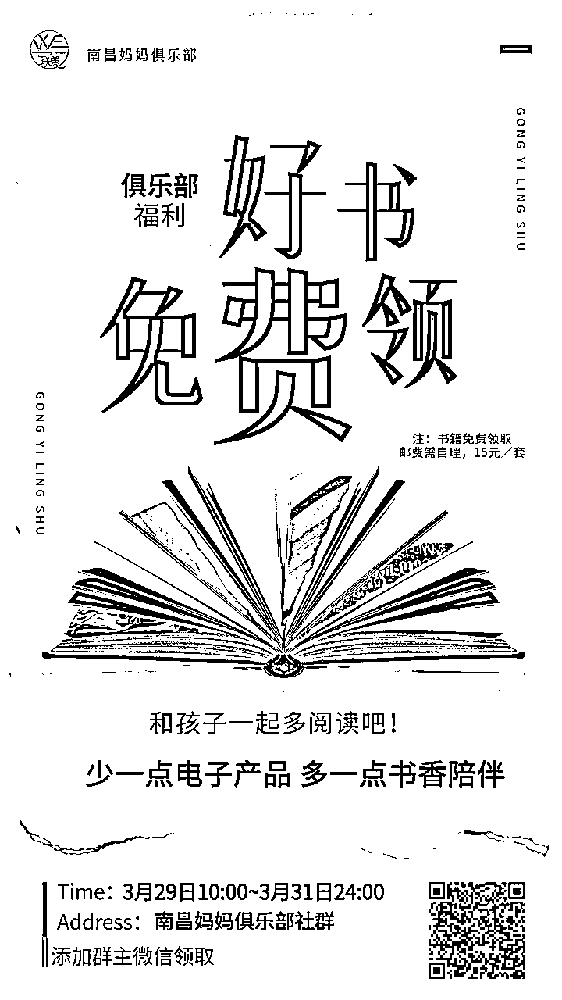
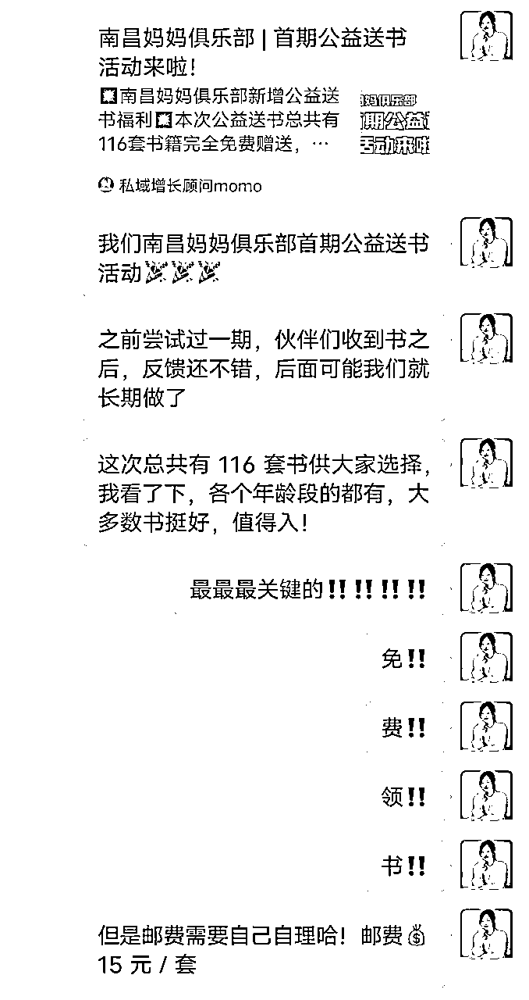
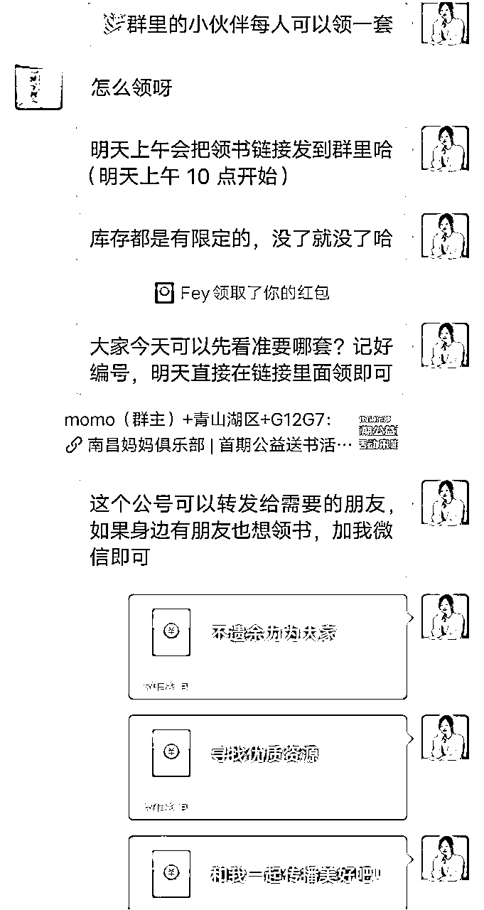
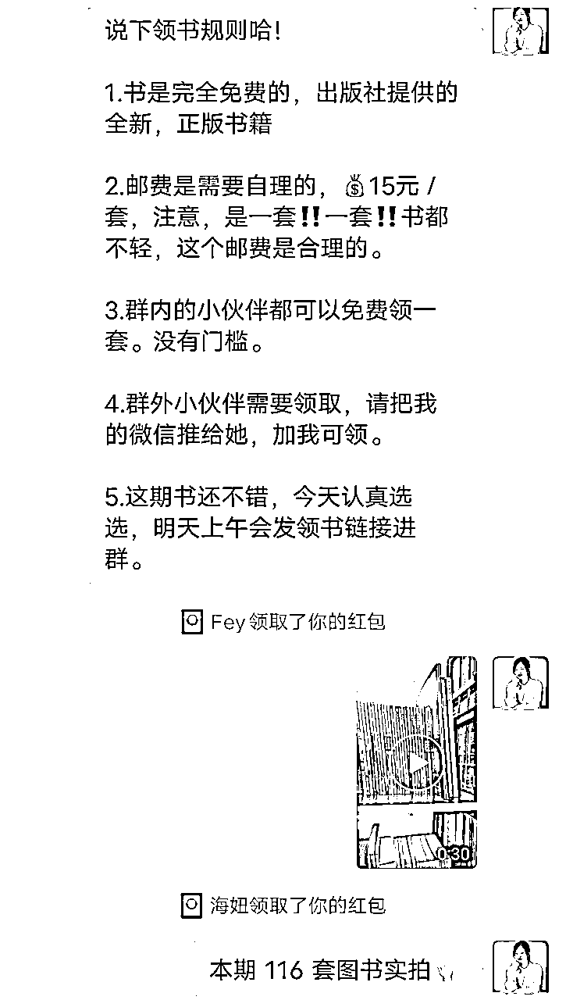
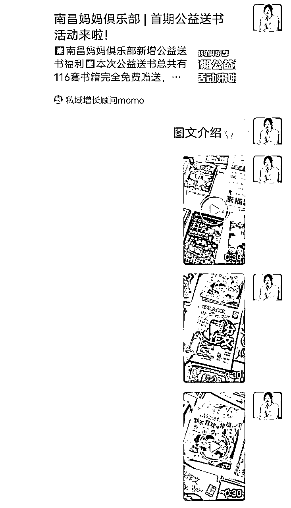
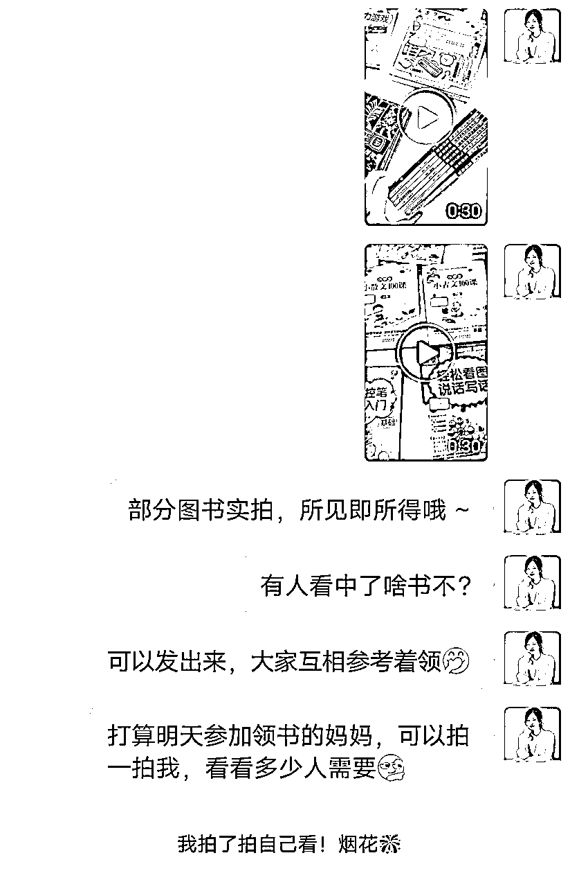
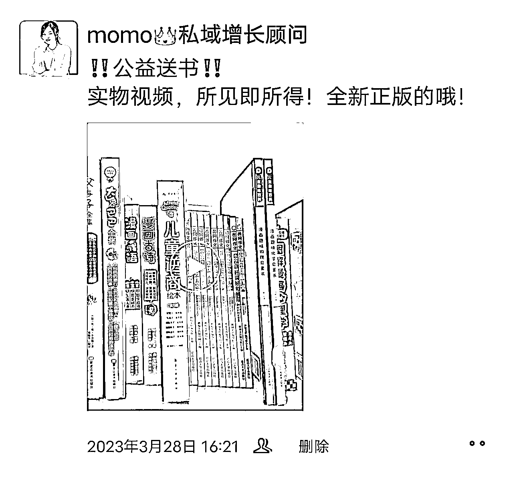

来源：https://kwj3fkh7ymf.feishu.cn/docx/Ro5mdEccUoXd4oxSbzYcZXCrnfh
一般送书的渠道都会提前给本期书单，我们需要整合到自己可以对外发布的图文渠道里，比如公众号、美篇、简书之类都可以，书单文章里需要有每套书的图文介绍，目的是方便提前种草，转发起来也方便。
参考文章https://mp.weixin.qq.com/s/mEtHunakGuyP3hMb3aedZA
海报是比较好的传播方式，后期在发朋友圈时有大用处，需要提前准备。海报的制作可以在稿定设计上直接找和书籍相关的模板，在海报上需要有以下几个重点信息：
①公益送书的字样
②本期活动时间段
③引流的个人微信二维码，或群二维码
④为了降低解释成本，我在海报上写明了书籍免费领，邮费15元/套，需自理
参考海报

如果是直接对接现成的渠道，一般他们会给实拍物料，我们只需按照自己的需求去下载，然后做好分类即可。如果是自己找的货源，就需要自己去准备了。
前面准备的书单文章、海报、书籍实拍视频/图片，可以提前1~2天分批在社群和朋友圈预热。需要注意的是，社群中一次性不要发太多内容，用户容易消化不良，可以少量多次，持续种草。朋友圈也可以多次发。
社群预热参考





朋友圈预热参考

一般，活动都有个开始时间，我这期送书活动的开始时间是3月29日上午10点，所以早上群里发完早安，我又顺便预热了下，这个预热使得活动开始的半小时内，两个群（150人+200人）就领了30+份。社群关注度普遍低的情况下，这个数据还不错了。
我对接的这个渠道做的比较正规，用户在小程序下单，且小程序链接只能我发，这样想领书的人只能进群或者加我微信，对于引流目的做活动比较友好。因为前面有预热，所以提前看好了书的人，会蹲守，链接发出来就有人会点开领，而已成功领取的反馈，又会反过来激励观望的人领取。
因为是第一次在自己的私域做公益送书活动，所以无论从操作上，还是规则上，用户都不太熟悉。为了降低沟通解释成本，编辑好领书规则，存进讯飞输入法里，用起来比较方便省事。
领书规则参考：
领书规则
1.书是完全免费的，出版社提供的全新，正版书籍
2.邮费是需要自理的，15元／套，注意，是一套‼️一套‼️书都不轻，这个邮费是合理的。
3.群内的小伙伴都可以免费领一套。没有门槛。
4.群外小伙伴需要领取，请把我的微信推给她，加我可领。
️领取方式：
点开群里领书链接，找到你选的书相应的链接，点领取，填写邮寄地址，支付15元邮费即可
‼️要上传截图的地方，可以随便放张图，不影响~
📚每人限领一套，带文案+海报发圈，联系momo可多领一套
群里种草的时间段，一般中午和晚上比较好，可以分别在群里发种草内容。
步骤：
①自己认真看下书单，和实拍视频、图片，找到值得推荐的书
②在群里发选中的书的序号，介绍截图，实拍视频、图片
③简单描述书好在哪里，为什么要领这套
Tips：
①一次性种草不要太多（3~5套即可），太多的选择反而让人无从选择
②种草内容里，最好跟用户需求、用户痛点挂钩
③每次种草结束，都要再发出一次小程序链接，用户可以不用爬楼拔草
（种草内容有图文、视频，打包放到了微信，可加我领取vx:13177869769）
可以把群里推荐的每套书发条朋友圈，文案就是推荐理由。
如果不想刷屏，可以把群里的分享截图发圈，既告诉别人你有书领，又表达群内信息更优质
活动周期一般为3天，到第二天晚上时，就可以通知明天本期领书活动结束，还没领的小伙伴抓紧看看。到活动最后一天时，需要多次发通知，让更多人关注到。
1、关于是否一定要发圈才能领书？
我的理解是，看目的，如果目的很单纯，就是为了引流，那么肯定是要强制发圈的，发了朋友圈/群才能领书。但是，我考虑到长期养群，用户的感受，以及小程序对第一单没有限制，但普通用户不能自行下第二单。所以，我制定的规则是，群友可以无条件领第一套书，但是如果想领第2套必须发圈 ，然后找我代下第二单。这样群友整体感觉不是被强迫发朋友圈的，而是因为自己有更多的需求，才要以发圈的条件交换领取第2套书资格的。感受上会好很多，对于长期经营来说，比较有利。
2、为什么群里要持续种草？
很多人也做领书活动，但是结果不太理想。他们只把书单扔进群里，很少有进一步的内容运营，这样用户要么没关注到，要么对书不了解，选来选去不知道该选什么好，最后就索性不选了吧！而群里挑选一些书，拿出来分析种草，可以给用户一些方向性，而且从数据上来看，被种草的书领取的量明显更大。还有一个重要的原因是，通过群里种草的方式，促使了很多人多领一套书，这样就会有更多人发朋友圈传播。
领书活动之后的7天内，用户会陆陆续续收到快递，这时候要鼓励大家实拍图片视频发到群里，发到朋友圈。这种反馈本身也可以引流，特别是如果反馈比较好，就会吸引很多宝妈了。
关于客诉的问题，虽然不应该由我们来负责，但私域是我们自己的，我们要妥善处理好，否则会有负面影响
①快递投诉。比如发货慢，包装破损等。这种要积极沟通渠道方和用户，帮助用户解决
②质量投诉。如果是书籍质量的问题，比如纸张不好，缺页等等问题，一要安抚好用户，二要调查其他书籍，如果普遍质量堪忧，最好停止合作。